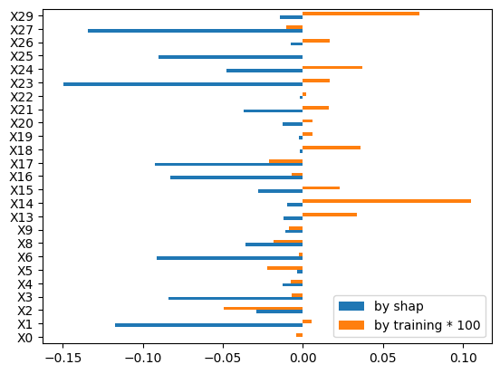
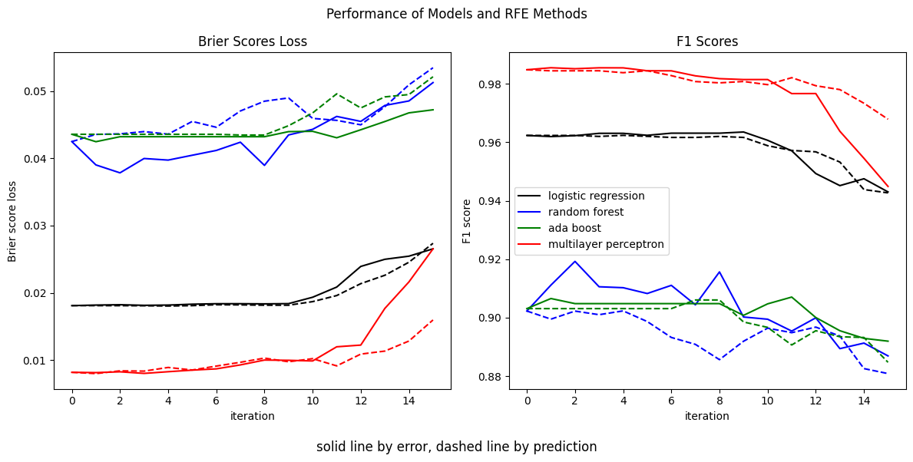

Now, of course, the fewer features we need the better, both for the aesthetic of parsimony and the pragmatics of needing fewer computing cycles, so the next step is to do some form of feature or model selection.
Here I will employ recursive feature elimination. This has a simple set of steps:
- Train model with a set of features.
- Use some measure to determine feature importance.
- Remove the least important feature.
- Go to step 1 with the new feature set.
This can be done until a particular criteria is met. I find with these relatively small sets of features it can be helpful to simply remove them all until only one is left, and then select the best performing configuration after that.
- Contribution to Error versus Contribution to Prediction
- SHAP values and probability predictions
- SHAP Values and Error Contribution
- A Recursive Feature Elimination Class
- Comparing Prediction and Error Methods of RFE
Contribution to Error versus Contribution to Prediction
This is traditionally done by looking at what feature provides the least significant contribution to making a successful prediction. For example, this could be using the coefficients of a logistic regression model, or the feature_importance_ attribute of a tree-based model. However, I came across ‘Which Features Are Harmful For Your Classification Model?” by Samuele Mazzanti on Towards Data Science and the method intrigued me.
The idea here is not eliminating which feature is most helpful, but which feature is most harmful. That is, find which feature contributes most to the the model error rather than prediction. As presented in the article, this error-based feature is unquestionably superior, so naturally it seemed worth further exploration. The algorithm is the same as above, except “feature importance” is determined by this contribution to error. Hereafter I will refer to recursive feature elimination according to contribution to prediction as the “prediction method” and that according to the contribution to error as the “error method.”
Mazzanti uses SHAP values to determine both prediction and error contributions. I will follow that here. SHAP values have the advantage of being model agnostic, and are an easy way to determine how various features contribute to various predictions. Some complexity emerges because each feature will have a different SHAP value for each prediction. This means that the contribution a feature makes to prediction or error will depend on the specific prediction being made. (A future addition to this portfolio will examine how this enables SHAP values to examine interactions between features without necessitating the additional mathematical apparatus one might need in, say, a generalized linear model with interaction terms. This is a great deal of the work I did for the analysis of infant mortality at the Indiana Department of Public Health.)
I will use the shap package to compute the SHAP values, as Mazzanti does. He explores a tree-based model and thus can use the shap.TreeExplainer class. I will use the generic shap.Explainer class, as I intend to look at four different models.
For these, the predicted probability is simply the sum of the SHAP values of each of the features plus a baseline value.
Using SHAP values, the contribution to prediction is pretty easy to find. It is simply the mean absolute value of the SHAP values for that feature.
For error, we need some loss metric. Again following Mazzanti, I am using a version of log loss or cross entropy. He proposed an “individual log loss,” which is computed for each prediction individually using the general log loss formula of for predicted probability that the actual class is 1.
SHAP values and probability predictions
Now, in the article, Mazzanti claims that the sum of SHAP values is not equal to the predicted probability. He uses a sigmoid function to convert the sums into the predicted probability. I was surprised by this, because in my understanding that is exactly what SHAP values are supposed to sum to. Their value is they show quantitatively how each feature contributes to the prediction. In the case of a classification model, the SHAP value is the amount by which the probability is increased or decreased. In order to check this, I did some quick investigation. I had two specific questions:
- Are the predicted probabilities simply the straightforward sums of the SHAP values and the base values?
- Mazzanti gives a method for finding what the model would predict if trained without that feature, which is simply substracting the SHAP value of that feature (before plugging the result into his sigmoid function). This seems pretty clearly inaccurate to me, but I also felt it worth checking.
Below I quickly:
- Train a calibrated estimators on the full set.
- Find SHAP values and sum them.
- Predict probabilities using the
predict_probamethod. - Subtract the SHAP values for the X3 columns (which above we saw having the highest correlation to the target) from the sum.
- Train the calibrated estimators with the X3 feature removed.
- Get the predicted probabilities from
predict_proba.
While I had originally intended to do this for all of the estimators, it quickly became clear with only the logistic regression that Mazzanti’s premise was completely mistaken.
def get_shaps(X,estimator,feature_to_drop=-1):
# A quick function to compute shap value sums, predicted probabilities, a sigmoid based on the shaps
# in order to test Mazzanti's claims
X1000 = X.iloc[:500,]
explainer = shap.Explainer(lambda x: estimator.predict_proba(x)[:,1],X1000)
explained = explainer(X.iloc[:500,])
shap_values = explained.values
shap_values_sum = np.sum(shap_values,axis=1)+explained.base_values
if feature_to_drop>-1:
shap_values_sum-=shap_values[:,feature_to_drop]
shap_sigmoid = 1/(1+np.exp(-shap_values_sum))
pred_probs = estimator.predict_proba(X.iloc[:500,])[:,1]
return shap_values_sum, pred_probs, shap_sigmoid
# use the logistic regression as it is the quickest and simplest
estimator = 'logistic regression'
# train on the full training set and calibrate with the validation set
temp1 = clone(estimators[estimator]).fit(X_train,y_train)
temp1 = CalibratedClassifierCV( FrozenEstimator(temp1) ).fit(X_val, y_val)
# get the sums of the shap values and the predicted probabilities
shap_values_all, pred_probs_all, shap_sigmoid_all = get_shaps(X_val,temp1)
# get the sums of the shap values minus feature X3
shap_values_less, pred_probs_less, shap_sigmoid_less = get_shaps(X_val,temp1,3)
# the relative error of the probability predicted by the estimator and that predicted by summing the shap values
d1 = (pred_probs_all-shap_values_all)/pred_probs_all
# drop the X3 column and train a new estimator
temp2 = clone(estimators[estimator]).fit(X_train.drop(columns="X3"),y_train)
temp2 = CalibratedClassifierCV( FrozenEstimator(temp2) ).fit(X_val.drop(columns="X3"),y_val)
# get the predicted probabilities from the estimator after X3 is dropped
pred_probs_less2 = temp2.predict_proba(X_val.iloc[:500,].drop(columns="X3"))[:,1]
# compare the shap values of the full model less that for X3 to the predicted probabilities after X3 is dropped
d2a = pred_probs_less2 - shap_values_less
d2b = (pred_probs_less2-shap_values_less)/pred_probs_less2
# the same but with the sigmoid of the shap values of the full model less than for X3
d3 = (pred_probs_less2-shap_sigmoid_less)/pred_probs_less2
display(
pd.DataFrame(
{
'predicted probs full model':pred_probs_all,
'shap sums full model':shap_values_all,
'relative error full model':d1,
'predicted probs with feature removed':pred_probs_less2,
'shap values with feature subtracted':shap_values_less,
'sigmoid':shap_sigmoid_less,
'absolute error of feature removal':d2a,
'relative error of feature removal':d2b,
'rel err of sigmoid':d3
}
).describe()
)| predicted probs full model | shap sums full model | relative error full model | predicted probs with feature removed | shap values with feature subtracted | sigmoid | absolute error of feature removal | relative error of feature removal | rel err of sigmoid | |
|---|---|---|---|---|---|---|---|---|---|
| count | 500.000000 | 500.000000 | 5.000000e+02 | 500.000000 | 500.000000 | 500.000000 | 500.000000 | 500.000000 | 500.000000 |
| mean | 0.261552 | 0.261552 | -7.461147e-14 | 0.261562 | 0.263971 | 0.561947 | -0.002409 | -144.891866 | -2475.497736 |
| std | 0.413254 | 0.413254 | 1.047104e-12 | 0.413246 | 0.395773 | 0.091899 | 0.039179 | 1038.041554 | 12795.600220 |
| min | 0.000003 | 0.000003 | -1.994995e-11 | 0.000003 | -0.067246 | 0.483195 | -0.105971 | -21378.814052 | -192176.325976 |
| 25% | 0.000827 | 0.000827 | -5.428578e-15 | 0.000823 | 0.014407 | 0.503602 | -0.029115 | -19.115360 | -617.267819 |
| 50% | 0.006178 | 0.006178 | -1.979455e-16 | 0.006136 | 0.036663 | 0.509165 | -0.008436 | -0.359913 | -80.743209 |
| 75% | 0.611638 | 0.611638 | 2.658062e-15 | 0.611394 | 0.560319 | 0.636518 | 0.015195 | 0.064101 | -0.026557 |
| max | 1.000000 | 1.000000 | 2.718276e-12 | 1.000000 | 1.104566 | 0.751115 | 0.189717 | 77.854396 | 0.294555 |
And here we see Mazzanti is wrong. Simply summing the SHAP values (with the base value) is almost exactly what the estimator predicts with the predict_proba method. Removing the feature from the SHAP sum results in large errors relative to what predict_proba yields for a model with the feature removed. Using a sigmoid function results in a value that has no relevance to anything.
SHAP Values and Error Contribution
But my curiosity did not end there. Is it possible that, despite the discrepancy in the predicted probability from a model trained without the feature and a model trained with the feature but with the feature’s SHAP value subtracted might still approximate the importance of the feature? I decided to take a look at it.
# list to hold the error-contribution-based feature importance based on retraining the model
feature_importance_from_trained = []
# list to hold the error-contribution-based feature importance based on substracting shap value
feature_importance_from_shap = []
# get a numpy array for the use in log loss computations
y = y_val.iloc[:500,].to_numpy()
def get_log_loss_vector(y,pred_probs,eps=1e-15):
# individual log loss
p = np.clip(pred_probs,eps,1-eps)
return -(y*np.log(p)+(1-y)*np.log(1-p))
# get the individual log loss from the model trained wih all features
log_loss_vector_all = get_log_loss_vector(y,pred_probs_all)
# loop through removing features
for i in range(X_train.shape[1]):
# get the probability from subtracting SHAP value of feature
shap_values_less, pred_probs_less, shap_sigmoid_less = get_shaps(X_val,temp1,i)
# get column name to drop
col_to_drop = X_train.columns[i]
# retrain model
temp2 = clone(estimators[estimator]).fit(X_train.drop(columns=col_to_drop),y_train)
temp2 = CalibratedClassifierCV( FrozenEstimator(temp2) ).fit(X_val.drop(columns=col_to_drop),y_val)
# get the log loss from the retrained model
temp_log_loss_vector = get_log_loss_vector(y,temp2.predict_proba(X_val.iloc[:500,].drop(columns=col_to_drop))[:,1])
# get the difference in log loss resulting from retrained model
log_loss_diff_trained = log_loss_vector_all - temp_log_loss_vector
# importance is the mean
feature_importance_from_trained.append(np.mean(log_loss_diff_trained))
# get the difference in log loss resulting from subtracting SHAP value
shap_log_loss_vector = get_log_loss_vector(y,shap_values_less)
log_loss_diff_shap = log_loss_vector_all - shap_log_loss_vector
# importance is the mean
feature_importance_from_shap.append(np.mean(log_loss_diff_shap))
# create a data frame real quick for easy plotting
error_contribution_frame = pd.DataFrame(
{
'by training':feature_importance_from_trained,
'by shap':feature_importance_from_shap
},
index = X_train.columns
)
# rescale log loss difference from training for plotting
error_contribution_frame['by training * 100'] = error_contribution_frame['by training']*100
# quick plot
error_contribution_frame[['by shap','by training * 100']].plot.barh() ;
The difference here requires no further formal investigation. Simply subtracting the SHAP value for the feature does not give a remotely comparable result to retraining the model without the feature.
A Recursive Feature Elimination Class
Despite this, I still found the underlying idea intriguing. While it would not be as simple as reproducing Mazzanti, there still might be value in trying this method of recursive feature elimination.
Below I create a class RecursiveFeatureElimination that has the option to either remove features based on prediction contribution or error contribution.
For the error method, the algorithm is:
- Train the model with a set of features.
- Compute the log loss with the validation set.
- Loop through each feature, removing it, retraining the model without it, and computing the new log loss score.
- Remove the feature that, when the model is trained without it, results in the highest log loss score.
- Return to 1, repeating until a set minimum number of features is reached.
def get_array_from_df(x):
'''function to convert a data frame to a numpy array.
parameter:
x: data frame
returns:
feature_names_in: feature names
x_values: the numpy array
'''
if isinstance(x, pd.DataFrame):
feature_names_in = x.columns.to_numpy()
x_values = x.values
else:
# if this is not a data frame, assign feature names and convert to a numpy array
feature_names_in = np.array([f"X{i}" for i in range(x.shape[0])])
x_values = np.asarray(x)
return feature_names_in, x_values
def get_individual_log_loss(y_true, y_proba, eps = 1e-15):
'''function to get the log loss for each observation.
parameters:
y_true: ground truth label
y_pred: predicted probability
returns: log losses
'''
y_proba = np.clip(y_proba, eps,1-eps)
return - y_true * np.log(y_proba)-(1-y_true)*np.log(1-y_proba)
def add_metrics_list(metric_dict, y_true, y_pred, y_proba):
'''function to compute some metrics and add them to a dictionary of lists of the metrics.
parameters:
metric_dict: a dictionary with keys for the metric and values are lists of metrics
y_true: ground truth label
y_pred: predicted label
y_proba: predicted probability
returns:
metric_dict: with new scores appended to each list
'''
metric_dict['brier'].append(brier_score_loss(y_true,y_proba))
metric_dict['confusion matrix'].append(confusion_matrix(y_true,y_pred))
metric_dict['log loss'].append(log_loss(y_true,y_proba))
metric_dict['roc auc'].append(roc_auc_score(y_true,y_proba))
metric_dict['accuracy'].append(accuracy_score(y_true,y_pred))
metric_dict['precision'].append(precision_score(y_true,y_pred))
metric_dict['recall'].append(recall_score(y_true,y_pred))
metric_dict['f1'].append(f1_score(y_true,y_pred))
return metric_dict
class RecursiveFeatureElimination:
'''class for recursive feature elimination.
this is a class that, when the fit method is used, uses recursive feature elimination to select features.
the method may either be with prediction or error contributions as determined from SHAP values. the features will be
successively eliminated until only the amount set by min_features_to_select remains. output will include a number of
metrics compute at each iteration to allow the user to select the best set of features. train data are used for
model training, validation data are used to calibrate and compute contributions, and the final performance metrics
are done with test data.
the algorithm is simple, and standard for RFE:
1. train model with set of features
2. compute feature importance with SHAP values either through prediction or error contribution
3. remove the worst scoring feature
4. train model with reduced set of features
5. compute metrics for later evaluation
6. return to 2 until the number of features = min_features_to_select
attributes:
estimator: an estimator
min_features_to_select: the number of features to remain after recursive elimination
feature_names_in_: names of features
ranking_: order in which features were eliminated
removal_scores_: the score of the feature removed computed from validation data
all_removal_scores_: a list of lists of the scores for each feature that are used for removal in each iteration
subsets_: list of all of the subsets of features (column index) used in each iteration
supports_: list of boolean lists for features used in each iteration
metrics_: dictionary with keys 'brier' for brier loss score, 'log loss' for log loss score, 'confusion matrix'
for a confusion matrix, 'roc auc' for area under the ROC, 'accuracy' for accuracy, 'precision' for precision,
'recall' for recall, 'f1' for F1, computed from test data
methods:
fit(data_dict, verbose, calibrate, n_shap_sample, method)
data_dict: a data dictionary with keys X_train, y_train for training data, X_val, y_val for validation
data, and X_test, y_test for test data
verbose: bool - whether to print various progress metrics for debugging, default False
calibrate: bool - whether to calibrate the estimators, default True
n_shap_sample: int - how many samples to use when computing the SHAP values, default 1000
method: ['error','prediction'] - whether to compute feature importance through error or prediction
contribution, default 'error'
'''
def __init__(self, estimator, min_features_to_select = 1):
'''initialize class with estimator and min_features_to_select
estimator must be some estimator that has both predict() and predict_proba() methods
min_features_to_select is the number of features to be left after recursive elimination
'''
self.estimator = estimator
self.min_features_to_select = min_features_to_select
def fit(self, data_dict, verbose = False, calibrate = True, n_shap_sample = 1000, method = 'error'):
'''
fit(data_dict, verbose, calibrate, n_shap_sample, method)
data_dict: a data dictionary with keys X_train, y_train for training data, X_val, y_val for validation
data, and X_test, y_test for test data
verbose: bool - whether to print various progress metrics for debugging, default False
calibrate: bool - whether to calibrate the estimators, default True
n_shap_sample: int - how many samples to use when computing the SHAP values, default 1000
method: ['error','prediction'] - whether to compute feature importance through error or prediction
contribution, default 'error'
'''
# dummy check method
if method not in ['prediction','error']:
raise ValueError("unknown method, must be either 'prediction' or 'error'")
# unpack the data dictionary
X_train = data_dict['X_train']
y_train = data_dict['y_train']
self.feature_names_in_, X_train = get_array_from_df(X_train)
X_val = data_dict['X_val']
y_val = data_dict['y_val']
X_val = get_array_from_df(X_val)[1]
X_test = data_dict['X_test']
y_test = data_dict['y_test']
X_test = get_array_from_df(X_test)[1]
# get the number of features
n_features = X_train.shape[1]
# add attributes for ranking and support
supports = []
self.ranking_ = np.repeat(n_features, n_features)
# get indices for all features
current_features = np.arange(n_features)
# initial fit and calibration of estimator
temp = clone(self.estimator)
temp.fit(X_train,y_train)
if calibrate:
temp = CalibratedClassifierCV( FrozenEstimator(temp) ).fit(X_val[:, current_features], y_val )
# initial predictions
pred_prob_val = temp.predict_proba(X_val)[:,1]
pred_prob_test = temp.predict_proba(X_test)[:,1]
pred_test = temp.predict(X_test)
# create the metric dictionary
metric_dict = {
'brier':[],
'log loss':[],
'confusion matrix':[],
'accuracy':[],
'precision':[],
'recall':[],
'f1':[],
'roc auc':[]
}
# compute the individual log losses on each observation
current_individ_log_loss = log_loss(y_val,pred_prob_val)
if verbose:
print(f"Initial brier loss score: {metric_dict['brier']}")
print(pred_prob_test)
# set the rank
rank = 1
# get the metrics for the initial fit
metric_dict = add_metrics_list(metric_dict,y_test,pred_test,pred_prob_test)
# initialize the list of all subsets
all_subsets = [current_features]
# initialize list of all supports
support = np.ones(len(current_features),dtype=bool)
if verbose:
print(support)
supports = [support]
all_removal_scores = []
worst_scores = []
feature_removed = []
#----- start recursion loop -------------------------------------#
while len(current_features)>self.min_features_to_select:
# get SHAP values
X1000 = X_val[:n_shap_sample,current_features]
explainer = shap.Explainer(lambda x: temp.predict_proba(x)[:,1],X1000)
explained = explainer(X_val[:n_shap_sample,current_features])
shap_values = explained.values
# initialize some lists
removal_scores = [] # all of the scores for this iteration
subsets = [] # list of all of the subsets for this iteration
shap_idx_list = range(len(current_features)) # the current_features has the original column numbers
# and for each successive iteration, these are the ones that will be selected from the X data.
# however, the SHAP array only has the number of features for the specific iteration, so those
# need to be called differently
# eliminate by which makes the least contribution to prediction
if method=='prediction':
# prediction contribution found from the mean of the absolute SHAP values for each feature
removal_scores = np.mean(np.abs(shap_values),axis=0)
if verbose:
print(removal_scores)
# eliminate by which makes the greatest contribution to error
elif method=='error':
# loop through all of the features
for i in range(len(current_features)):
# get the subset of features with one removed
subset = np.delete(current_features,i)
# train a new model
temp_estimator = clone(self.estimator)
temp_estimator.fit(X_train[:,subset],y_train)
if calibrate:
temp_calibrated = CalibratedClassifierCV( FrozenEstimator(temp_estimator) ).fit(X_val[:, subset], y_val )
# get the log loss (from validation set)
temp_pred = temp_calibrated.predict_proba(X_val[:,subset])[:,1]
removal_scores.append(log_loss(y_val,temp_pred))
# get the index of the feature to remove
best_idx = np.argmin(removal_scores)
best_subset = np.delete(current_features,best_idx)
# add the best subset and score for the removed feature to the running lists
all_subsets.append(best_subset)
all_removal_scores.append(removal_scores)
worst_scores.append(removal_scores[best_idx])
# remove feature
feature_to_remove = current_features[best_idx]
feature_removed = self.feature_names_in_[feature_to_remove]
# assign rank to removed feature
self.ranking_[feature_to_remove] = rank
rank+=1 # increment rank
# create boolean for columns
support = support.copy()
support[feature_to_remove] = False
if verbose:
print(support)
supports.append(support)
if verbose:
print(supports)
# reassign current_features
current_features = best_subset
# retrain the model with the new set of features and compute sundry scores
temp = clone(self.estimator)
temp.fit(X_train[:,current_features], y_train )
if calibrate:
temp = CalibratedClassifierCV( FrozenEstimator(temp) ).fit(X_val[:, current_features], y_val )
pred_prob_val = temp.predict_proba(X_val[:,current_features])[:,1]
pred_prob_test = temp.predict_proba(X_test[:,current_features])[:,1]
pred_test = temp.predict(X_test[:,current_features])
if verbose:
print(best_subset)
print(pred_prob_test)
metric_dict = add_metrics_list(metric_dict,y_test,pred_test,pred_prob_test)
# get the new individual log losses
current_individ_log_loss = get_individual_log_loss(y_val,pred_prob_val)
# tell the user which feature is getting removed
print(f"Removing feature {self.feature_names_in_[feature_to_remove]}")
# create attributes of informative stuff
self.removal_scores_ = worst_scores
self.subsets_ = all_subsets
self.all_removal_scores_ = all_removal_scores
self.supports_ = supports
self.metrics_ = metric_dict
self.feature_removed_ = feature_removed
return self
Comparing Prediction and Error Methods of RFE
Instead of having lengthy lists of arguments for functions or methods, I like to use dictionaries to make them compact.
data_dict = {
'X_train':X_train,
'y_train':y_train,
'X_val':X_val,
'y_val':y_val,
'X_test':X_test,
'y_test':y_test
}The next loop will train RFE objects where the RFE is based on error contribution (RFE_losses) and prediction contribution (RFE_preds). This is for demonstration purposes.
# set up empty dictionaries; each key will be one of the estimators; RFE_losses will use error method, RFE_preds will use
# prediction method
RFE_losses = {}
RFE_preds = {}
for estimator in estimators.keys():
print('doing RFE on '+estimator)
print('loss')
RFE_loss = RecursiveFeatureElimination(estimators[estimator])
RFE_loss.fit(data_dict,n_shap_sample=500);
RFE_losses[estimator] = RFE_loss
print('prediction')
RFE_pred = RecursiveFeatureElimination(estimators[estimator])
RFE_pred.fit(data_dict,n_shap_sample=500,method='prediction');
RFE_preds[estimator] = RFE_predfg,ax = plt.subplots(1,2,figsize=(12,6))
colors = ['k','b','g','r']
lines = []
for i, estimator in enumerate(RFE_losses.keys()):
line, = ax[0].plot(RFE_losses[estimator].metrics_['brier'][0:16],colors[i],label=estimator)
lines.append(line)
ax[0].plot(RFE_preds[estimator].metrics_['brier'][0:16],colors[i]+'--')#,label=estimator+" prediction")
ax[1].plot(RFE_losses[estimator].metrics_['f1'][0:16],colors[i])
ax[1].plot(RFE_preds[estimator].metrics_['f1'][0:16],colors[i]+'--')
#ax.legend()
fg.suptitle('Performance of Models and RFE Methods')
fg.supxlabel('solid line by error, dashed line by prediction')
ax[0].set_title('Brier Scores Loss')
ax[0].set_ylabel('Brier score loss')
ax[0].set_xlabel('iteration')
ax[1].set_title('F1 Scores')
ax[1].set_ylabel('F1 score')
ax[1].set_xlabel('iteration')
ax[1].legend(handles = lines)
fg.tight_layout()
plt.show() Here we can see comparison of two significant scores: Brier loss and F1. For the F1 scores, it looks as though for the first ten feature removals, the error method outperforms the prediction method. This is also true for Brier score loss for the ensemble methods, although not for the logistic regression or neural network. We can get quantities by looking at what the best of each of the metrics computed in the object fitting is, and how the prediction and error methods compare.
loss_metrics = ['brier','log loss']
gain_metrics = ['roc auc','accuracy','precision','recall','f1']
metrics_table_dict = {}
for_index = []
def get_metrics_for_list(metrics_list,RFE_object,metric_names_list,metric_type='loss'):
metric_list_numeric = []
for metric in metric_names_list:
if metric_type=='loss':
measure = np.min(RFE_object.metrics_[metric])
metrics_list.append(f"{measure:.04f}")
metric_list_numeric.append(measure)
idx = np.argmin(RFE_object.metrics_[metric])
elif metric_type=='gain':
measure = np.max(RFE_object.metrics_[metric])
metrics_list.append(f"{measure:.04f}")
metric_list_numeric.append(measure)
idx = np.argmax(RFE_object.metrics_[metric])
metrics_list.append(f"{len(RFE_object.subsets_[idx]):.0f}")
metric_list_numeric.append(np.nan)
return metric_list_numeric
for estimator in estimators.keys():
pred_metrics_list = []
loss_metrics_list = []
temp1 = get_metrics_for_list(pred_metrics_list,RFE_preds[estimator],loss_metrics,metric_type='loss')
temp2 = get_metrics_for_list(loss_metrics_list,RFE_losses[estimator],loss_metrics,metric_type='loss')
metrics_diff1 = [f"{temp1[i] - temp2[i]:.04f}" for i in range(len(temp1))]
temp1 = get_metrics_for_list(pred_metrics_list,RFE_preds[estimator],gain_metrics,metric_type='gain')
temp2 = get_metrics_for_list(loss_metrics_list,RFE_losses[estimator],gain_metrics,metric_type='gain')
metrics_diff2 = [f"{temp1[i] - temp2[i]:.04f}" for i in range(len(temp1))]
metrics_table_dict[estimator+' by error'] = loss_metrics_list
metrics_table_dict[estimator+' by prediction'] = pred_metrics_list
metrics_table_dict[estimator+' prediction - error'] = metrics_diff1+metrics_diff2
all_metrics = loss_metrics+gain_metrics
for metric in all_metrics:
for_index.extend([metric,'n features '+metric])
metrics_table = pd.DataFrame(metrics_table_dict,index=for_index).replace('nan','')
metrics_table| logistic regression by error | logistic regression by prediction | logistic regression prediction - error | random forest by error | random forest by prediction | random forest prediction - error | ada boost by error | ada boost by prediction | ada boost prediction - error | multilayer perceptron by error | multilayer perceptron by prediction | multilayer perceptron prediction - error | |
|---|---|---|---|---|---|---|---|---|---|---|---|---|
| brier | 0.0181 | 0.0181 | -0.0001 | 0.0378 | 0.0425 | 0.0046 | 0.0425 | 0.0435 | 0.0010 | 0.0080 | 0.0080 | -0.0000 |
| n features brier | 25 | 21 | 23 | 25 | 24 | 18 | 22 | 24 | ||||
| log loss | 0.0847 | 0.0847 | 0.0000 | 0.1437 | 0.1586 | 0.0149 | 0.1588 | 0.1604 | 0.0016 | 0.0437 | 0.0441 | 0.0004 |
| n features log loss | 22 | 21 | 23 | 25 | 24 | 25 | 22 | 25 | ||||
| roc auc | 0.9912 | 0.9912 | 0.0000 | 0.9824 | 0.9794 | -0.0030 | 0.9797 | 0.9793 | -0.0004 | 0.9928 | 0.9928 | 0.0000 |
| n features roc auc | 22 | 20 | 21 | 24 | 24 | 25 | 25 | 25 | ||||
| accuracy | 0.9784 | 0.9778 | -0.0006 | 0.9530 | 0.9432 | -0.0098 | 0.9450 | 0.9446 | -0.0004 | 0.9914 | 0.9910 | -0.0004 |
| n features accuracy | 16 | 25 | 23 | 23 | 14 | 18 | 24 | 25 | ||||
| precision | 0.9732 | 0.9713 | -0.0019 | 0.9403 | 0.9287 | -0.0116 | 0.9154 | 0.9144 | -0.0010 | 0.9898 | 0.9891 | -0.0007 |
| n features precision | 23 | 25 | 23 | 22 | 23 | 18 | 21 | 24 | ||||
| recall | 0.9590 | 0.9543 | -0.0047 | 0.9012 | 0.8844 | -0.0168 | 0.9032 | 0.8978 | -0.0054 | 0.9839 | 0.9825 | -0.0013 |
| n features recall | 16 | 21 | 17 | 25 | 15 | 18 | 24 | 25 | ||||
| f1 | 0.9635 | 0.9624 | -0.0012 | 0.9193 | 0.9023 | -0.0169 | 0.9071 | 0.9061 | -0.0010 | 0.9855 | 0.9848 | -0.0007 |
| n features f1 | 16 | 21 | 23 | 21 | 14 | 18 | 24 | 25 |
This table is the best value (smallest for loss scores, largest for everything else) and the number of features in the iteration with that score, with a column that is simply the difference between the prediction method and error method. For the loss scores, if the difference is positive, the error method is performing better. For the others, if the difference is negative, the error method is performing better. And here we see in the majority of cases, the error method yields a better value.
In the end, what we see is that the neural network trained with the error method is the clear winner for this data set.